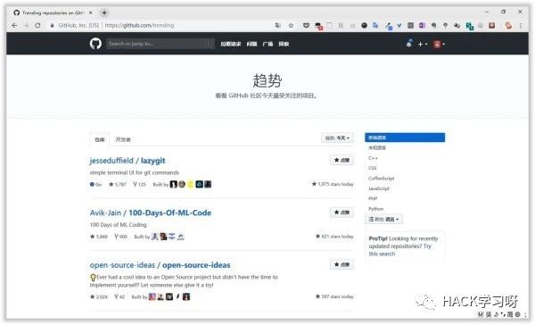
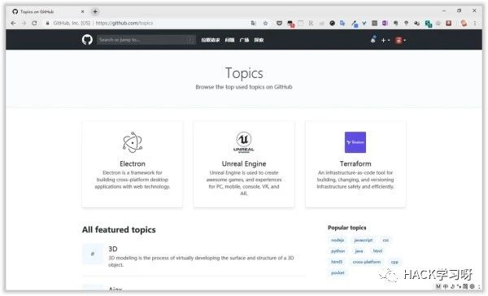
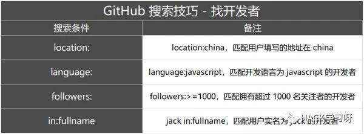
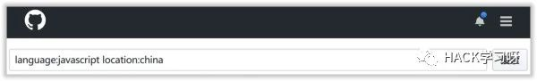
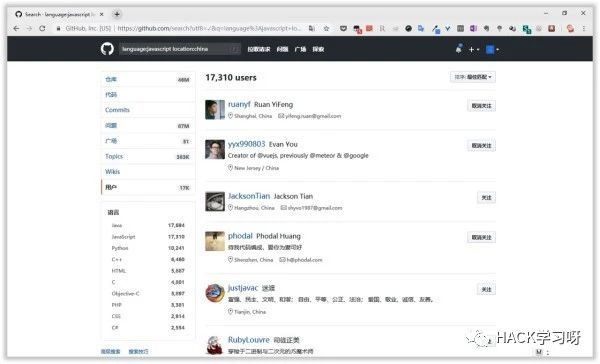
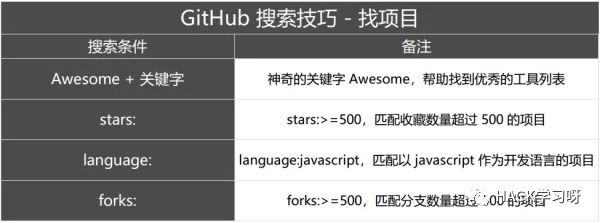
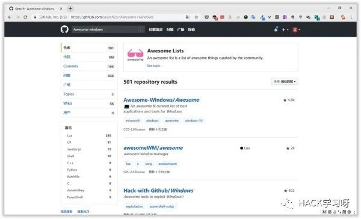
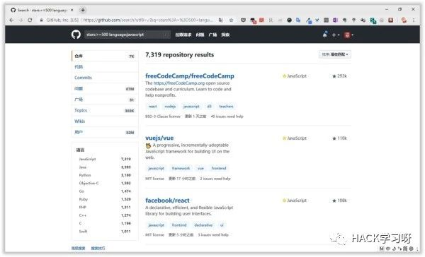
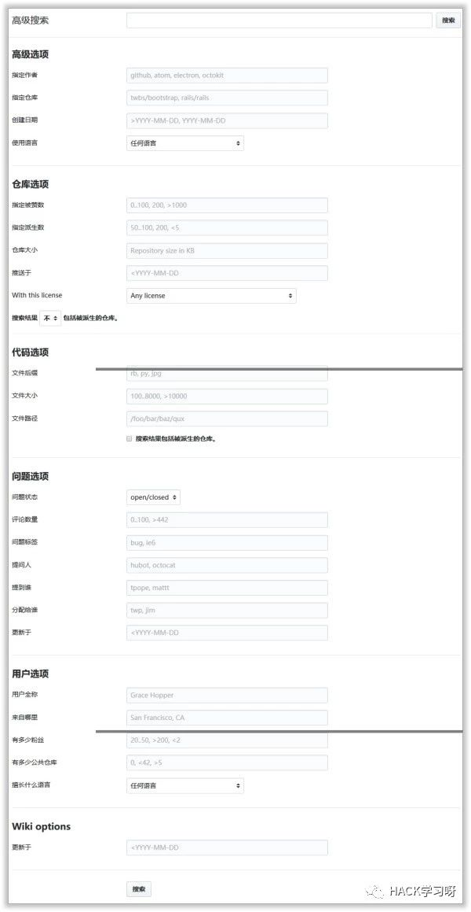

掌握 3 个搜索技巧，在 GitHub 上快速找到信息安全资源

GitHub 作为目前广大程序猿最大的游乐场，在今年 6 月被 微软 以 75 亿美元价值的微软股票收购，GitHub 再次成为业界讨论的焦点。GitHub 以自由开放的定位吸引了相当多的个人开发者和企业，不断发布和更新相当好用的软件和工具。之前少数派曾经为大家整理和推荐了 GitHub 上免费好用的 Windows、macOS 平台的软件：
对于使用者，我不禁好奇：面对如此海量的 GitHub 项目，究竟怎样才能这个平台发现一些优秀的软件和工具。秉着这样的疑问，我收集和总结了下面这几个搜索技巧。
搜热门：GitHub Trend 和 GitHub Topic
GitHub Trend 页面总结了每天/每周/每月周期的热门 Repositories 和 Developers，你可以看到在某个周期处于热门状态的开发项目和开发者。而 GitHub Topic 展示了最新和最流行的讨论主题，在这里你不仅能够看到开发项目，还能看到更多非开发技术的讨论主题，比如 Job、Chrome 浏览器等。

GitHub Trend

GitHub Topic
搜开发者
坊间传闻人事招聘开发类员工时，招聘对象在 GitHub 贡献会是重要的参考指标之一。GitHub 作为优秀国产开源软件的集散地之一，埋藏了不少出色的开发者，所以在寻找国产软件的时候，可以尝试先找国内开发者。利用 GitHub 强大的搜索功能，增加几个搜索参数即可轻松找到「目标人物」。
（注：GitHub 官方还支持很多搜索条件，在 这里 可以查看官方出品的搜索技巧。）

Github 搜索技巧 - 找开发者
比如需要寻找国产软件，首先想到的应该是在 GituHub 上找国内开发者，搜索时设置 location 为 China，如果你要寻找使用 javascript 语言开发者，则再增加 language 为 javascript，整个搜索条件就是：language:javascript location:china，从搜索结果来看，我们找到了近 17000 名地区信息填写为 china 的 javascript 开发者，朋友们熟悉的阮一峰老师排在前列。根据官方指引，搜索 GitHub 用户时还支持使用 followers、in:fullname 组合条件进行搜索。

使用组合条件进行搜索

搜索条件<language:javascript location:china>
搜项目
我们需要在 GitHub 上找到优秀的项目和工具，同样，通过关键字或者设置搜索条件帮助你事半功倍找到好资源。我的使用习惯是先用某些关键词搜索，得到的搜索结果优先展示一些现成的软件和工具。

GitHub 搜索技巧 - 找项目
Awesome + 关键字
Awesome 似乎已经成为不少 GitHub 项目喜爱的命名之一，比如前面提及要找到优秀的 Windows 软件，可以尝试搜索 Awesome windows，得到这样的搜索结果：

Awesome windows 搜索结果
排名前列的结果出现了 Windows/Awesome 项目，这里集合了 Windows 上优质和精选的最佳应用程序及工具列表。在这里，我收集了这些 Awesome 主题的优秀项目：The awesome manifesto、Awesome iOS frameworks、Awesome wesome Android libraries and resources。
设置搜索条件
如果你明确需要寻找某类特定的项目，比如用某种语言开发、Stars 数量需要达到标准的项目，在搜索框中直接输入搜索条件即可。其中用于发现项目，我的用法是灵活运用下面几个搜索条件：stars:、language:、forks:，其实就是设置项目收藏、开发语言、派生的搜索条件，比如输入 stars:>=500 language:javascript，得到的结果 就是收藏大于和等于 500 的 javascript 项目，排名前列是开源代码库和课程项目 freeCodeCamp、大热门的 Vue 和 React 项目。

搜索条件<stars:>=500 language:javascript>
如果觉得记住这些搜索条件略显繁琐的话，使用 GitHub 提供的 高级搜索功能，同样可用自定义条件进行搜索。或者参考官方给出的帮助指南 Searching on GitHub ，里面有更多关于项目、代码、评论、问题等搜索技巧。

GitHub 高级搜索功能
下面是 GitHub 上影响力颇大的项目，仅列举部分：
free-programming-books：整理了所有和编程相关的免费书籍，同时也有 中文版项目。
github-cheat-sheet：集合了使用 GitHub 的各种技巧。
android-open-project：涵盖 Android 开发的优秀开源项目。
chinese-independent-developer：聚合所有中国独立开发者的项目。
结语
GitHub 网站拥有很多优秀的开源项目，用好 GitHub 的搜索功能，我们既可以使用官方提供的高级搜索和 Topic、Trend 专题页面，也可以学习组合使用搜索条件的方法，主动发现更多好用的项目和工具。

更换一下语法以及关键词就可以在github上搜索到与渗透测试以及信息安全相关的知识了
很多在百度和google无法找到的资料，都可以上github上找找看